О нас
Итак, нас зовут Анна и Николай. История наша началась давно, в 1982 году, когда мы, собственно говоря, и познакомились. Поступив на курсы водителей, я познакомился с хорошим парнем Димой, у которого была жена и две дочки, одной из которых и была Анюта. Мы были больше, чем друзья. Мы были братья. И его семья была моей семьёй. И для детей я был вторым папой.
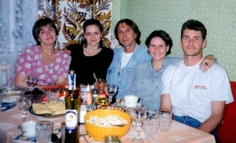
И, казалось, никакие проблемы не смогут разрушить нашу дружбу.
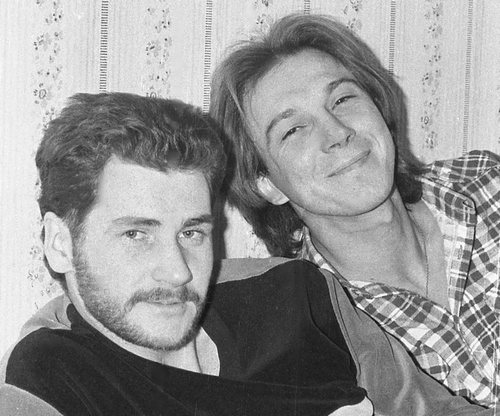
Сколько тропинок было исхожено вместе.
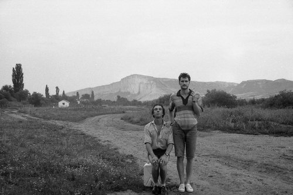
Сколько было изъезжено дорог.
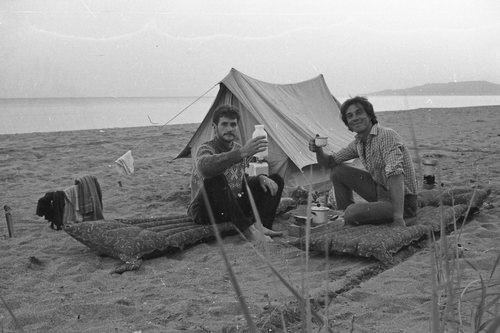
Мы были молоды и думали о том, что даже когда состаримся, будем крепкими старичками в шортах..
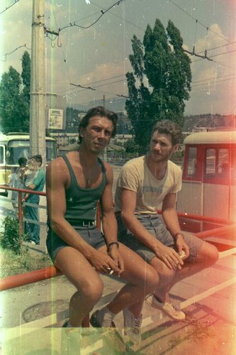
Сколько было выпито разного-всякого.
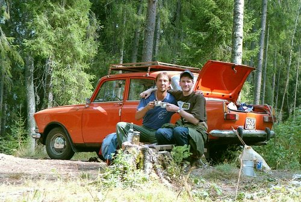
И даже мой отъезд в Германию не мог прекратить нашу дружбу.
Я приглашал друга и его детей в гости.
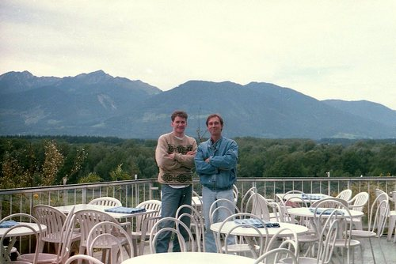
И кто, как не он, ухаживал за мной, когда я после комы полгода выкарабкивался из лап смерти.
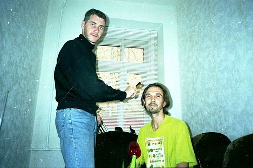
И так шли годы...
Анна повзрослела и превратилась в прекрасную девушку.
И вот в 2002 году мы поняли, что любим друг друга. И что хотим быть вместе на всю жизнь. Но, к сожалению, её родители восприняли это в штыки. И сразу кончилась наша дружба. В одно мгновение из друга я превратился во врага. Все их силы были брошены на то, чтобы не дать нам возможности быть вместе. Дело дошло до угроз. Было страшно смотреть в налитые кровью глаза бывшего друга, который, как сумасшедший, только повторял, что убъёт и меня и дочку, а потом покончит и с собой. Анина бабушка кричала ей в лицо проклятия и обещала потратить все свои пенсионные сбережения на то, чтобы уничтожить меня физически. Всё напоминало сумасшедший дом или глупый американский фильм ужасов. Попытки поговорить с другом спокойно и по-человечески не давали никакого результата. Пытались обратиться в милицию с заявлением об угрозах и в ответ услышали циничное: "когда будет труп, тогда и обращайтесь"...
Жизнь стала невыносимой и надо было что-то решать.
За чаем с друзьями была выбрана точка на глобусе
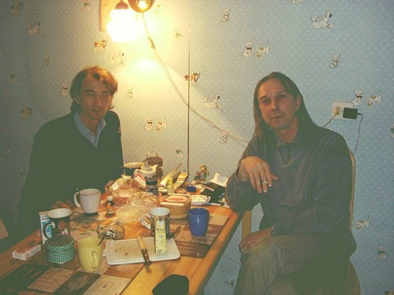
Пришлось долго рассуждать о правильности решения
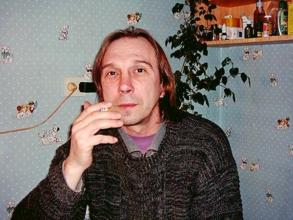
На прощание слепили снеговика в парке
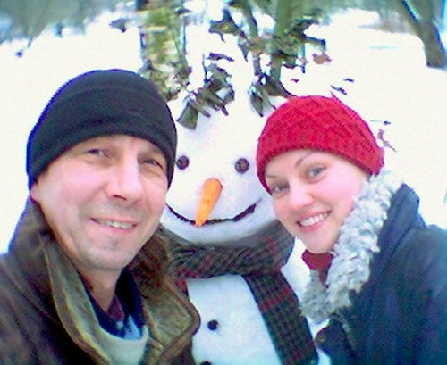
За три дня до отъезда с вещами у друга Андрея
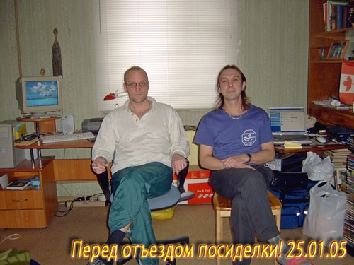
Конечно, что наша любовь оказалась сильнее. Мне удалось срочно, но за копейки, продать свою комнату в коммуналке и на вырученные деньги купить две путёвки в Доминиканскую республику. Страна была выбрана за безвизовый въезд и отсутствия депортации. Это был очень авантюрный поступок и мы никому не советуем повторять его. Но ради желания быть вместе, нам ничего не осталось другого, как в 2005 покинуть любимый Питер и улететь в Доминиканскую республику, где мы в данный момент и живём. Теперь у нас есть возможность каждый день быть вместе - и мы счастливы!
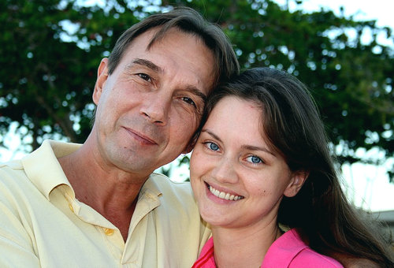
UPD от 18.01.2007Вот такая новость: бывший мой друг, Анин папа, который сломал наши жизни, вынудив нас покинуть любимый Ленинград - сам через год после нашего отъезда бросил жену и вторую дочку, и сочетался законным браком с двадцатисемилетней ( на 4 года моложе собственной дочери), с которой произвёл на свет ещё двоих детей... Вот такие гримасы судеб...